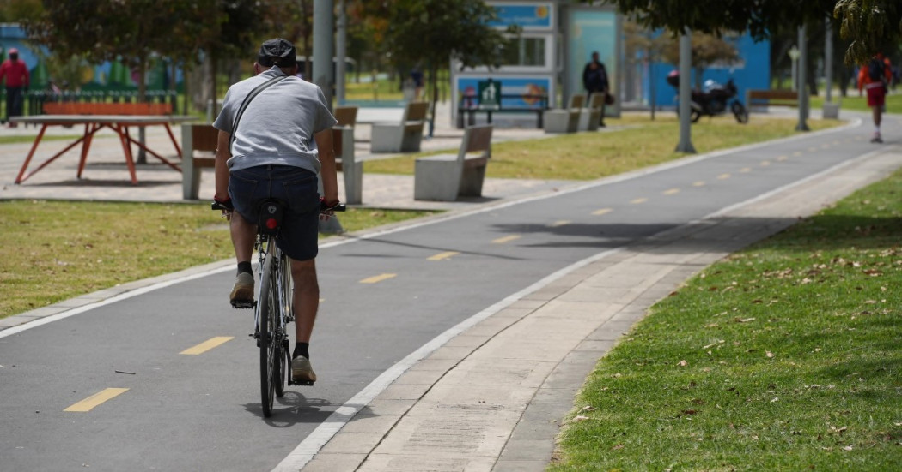
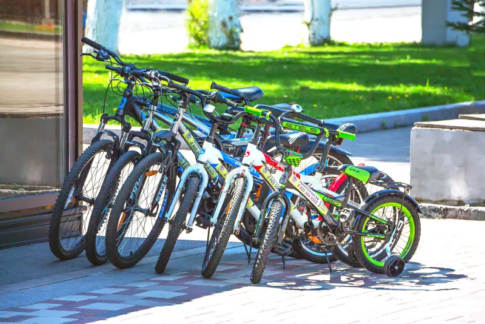

¿Quienes somos?
En Rueda Libre creemos que la mejor forma de latir al ritmo de Medellín es sintiendo su brisa. Somos más que un servicio de alquiler de bicicletas; somos tu pasaporte para explorar la ciudad desde otra perspectiva, conectar con sus espacios verdes, su cultura y su gente de una manera sostenible, activa y divertida. Olvídate del tráfico y el estrés: súmate al movimiento ciclista y descubre los encantos de la Ciudad de la Eterna Primavera a tu propio ritmo.
En Rueda Libre ofrecemos una amplia variedad de bicicletas para alquilar en Medellín. Ya sea que busques una bicicleta de montaña, urbana o eléctrica, tenemos la opción perfecta para ti. Encuéntranos
Nuestro proceso de alquiler es rápido y sencillo. Solo necesitas elegir tu bicicleta, seleccionar el tiempo de alquiler y disfrutar de tu paseo por la ciudad.
¿Por qué elegir Rueda Libre?
- Ubicación estratégica:Nos encontramos en un punto clave de la ciudad, con fácil acceso directo a las principales ciclovías y rutas turísticas.
- Seguridad y confianza: Todas nuestras bicicletas pasan por rigurosas revisiones técnicas antes de cada entrega para garantizar tu tranquilidad.
- Tarifas accesibles: Planes diseñados para todos los bolsillos, sin letras pequeñas ni cobros ocultos.
- Sostenibilidad real:Alquilando con nosotros reduces tu huella de carbono y contribuyes a una movilidad más limpia y amigable para Medellín.


Nuestros servicios
-
Alquiler de Bicicletas
¿Querés pedalear libremente por la ciudad? Ponemos a tu disposición una flota de bicicletas modernas, cómodas y en perfecto estado mecánico, ideales tanto para trayectos urbanos como para paseos recreativos.
- Qué incluye: Bicicleta urbana o de montaña, casco de seguridad certificado y guaya de seguridad antirrobo.
- Modalidades: Tarifas flexibles por horas, días completos o planes semanales.
-
Recorridos Guiados
Conocé Medellín de la mano de expertos locales que conocen cada rincón, historia y secreto de la ciudad. Diseñamos rutas seguras y memorables para todos los niveles.
- Experiencias disponibles: Río y parques, Sabores del barrio y Reto las palmas
- Consulta sus tarifas: aqui
-
Taller Básico y Asistencia en Ruta
Queremos que tu experiencia sea 100% segura y sin preocupaciones. Si tu bicicleta necesita un ajuste rápido o tienes algún imprevisto menor mientras ruedas con nosotros, te cubrimos las espaldas.
- Qué incluye: Ajuste de frenos y cambios, calibración y presión de llantas, lubricación de cadena y soporte técnico rápido para que sigas rodando sin demoras.
¿Cómo empezar a rodar con nosotros?
- Elige tu servicio o bici: Visítanos en nuestra sede o explora nuestro catálogo online para seleccionar la bicicleta o el tour guiado que mejor se adapte a tu plan.
- Reserva tu tiempo: Define si necesitas la bici por unas horas, un día completo o si prefieres sumarte a una de nuestras experiencias guiadas.
- Equípate y recibe recomendaciones: Te entregamos tu bicicleta con todos los elementos de seguridad y te compartimos mapas y consejos clave sobre las mejores rutas de la ciudad.
- ¡Disfruta el viaje!: USal a pedalear, descubre los paisajes urbanos de Medellín, vive la libertad y devuélvenos la bici al finalizar tu aventura.
Encuéntranos
Estamos ubicados en el corazón de la ciudad, justo en Ciudad del Río. Es el punto de partida perfecto para conectar con las ciclovías y los senderos más bonitos. ¡Pásate a saludarnos! Ubicación Exacta